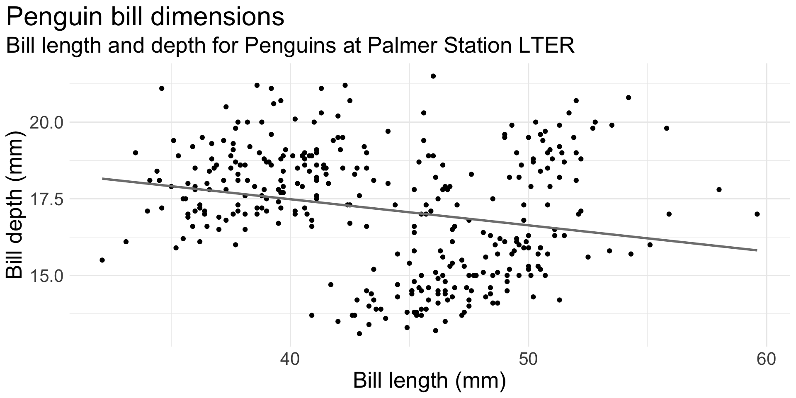
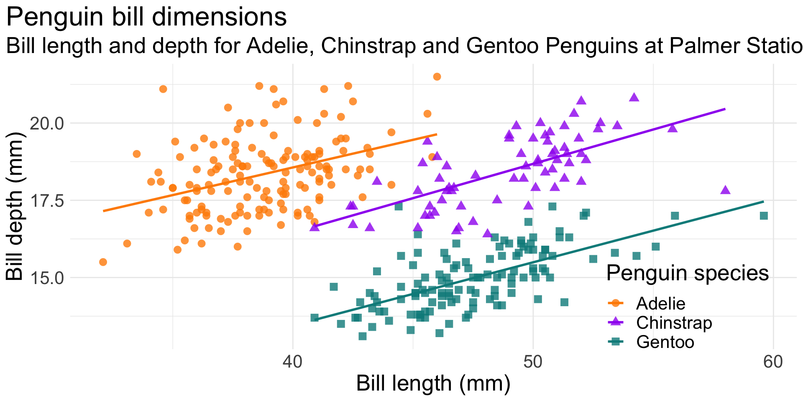

Introduction to R and RStudio
R Foundations Course
October 10, 2022
The tidyverse
The tidyverse is an opinionated collection of R packages designed for data science. All packages share an underlying design philosophy, grammar and data structures.

From https://education.rstudio.com/blog/2020/07/teaching-the-tidyverse-in-2020-part-1-getting-started/
palmerpenguins
palmerpenguins is a dataset package, designed to be a great example for data exploration and visualisation.
It contains measurement data for 344 penguins, from three different species, collected from three islands in the Palmer Archipelago, Antarctica.

Penguin artwork by Allison Horst https://allisonhorst.github.io/palmerpenguins/articles/art.html
With script

Using scripts
Text files saved with an .R suffix are recognised as R code
Code can be sent directly from a script to the console as follows:
- Ctrl/⌘ + ↵ or
 run current line
run current line
- Run multiple lines by selecting first
- Ctrl/⌘ + Shift + ↵ or

- Run the script from start to finish.
What’s the relationship between bill length and depth?


ggplot(data = penguins,
aes(x = bill_length_mm,
y = bill_depth_mm)) +
geom_point() +
geom_smooth(method = "lm", se = FALSE, color = "gray50") +
labs(title = "Penguin bill dimensions",
subtitle = "Bill length and depth for Penguins at Palmer Station LTER",
x = "Bill length (mm)",
y = "Bill depth (mm)") +
theme_minimal() +
theme(plot.title.position = "plot",
text = element_text(size = 20))
ggplot(data = penguins,
aes(x = bill_length_mm,
y = bill_depth_mm,
group = species)) +
geom_point(aes(color = species,
shape = species),
size = 3,
alpha = 0.8) +
geom_smooth(method = "lm", se = FALSE, aes(color = species)) +
scale_color_manual(values = c("darkorange","purple","cyan4")) +
labs(title = "Penguin bill dimensions",
subtitle = "Bill length and depth for Adelie, Chinstrap and Gentoo Penguins at Palmer Station LTER",
x = "Bill length (mm)",
y = "Bill depth (mm)",
color = "Penguin species",
shape = "Penguin species") +
theme_minimal() +
theme(legend.position = c(0.85, 0.15),
plot.title.position = "plot",
text = element_text(size = 20))This is an illustration of Simpson’s Paradox.
Simpson’s paradox is a phenomenon in probability and statistics in which a trend appears in several groups of data but disappears or reverses when the groups are combined.
Example adapted from https://allisonhorst.github.io/palmerpenguins/articles/examples.html